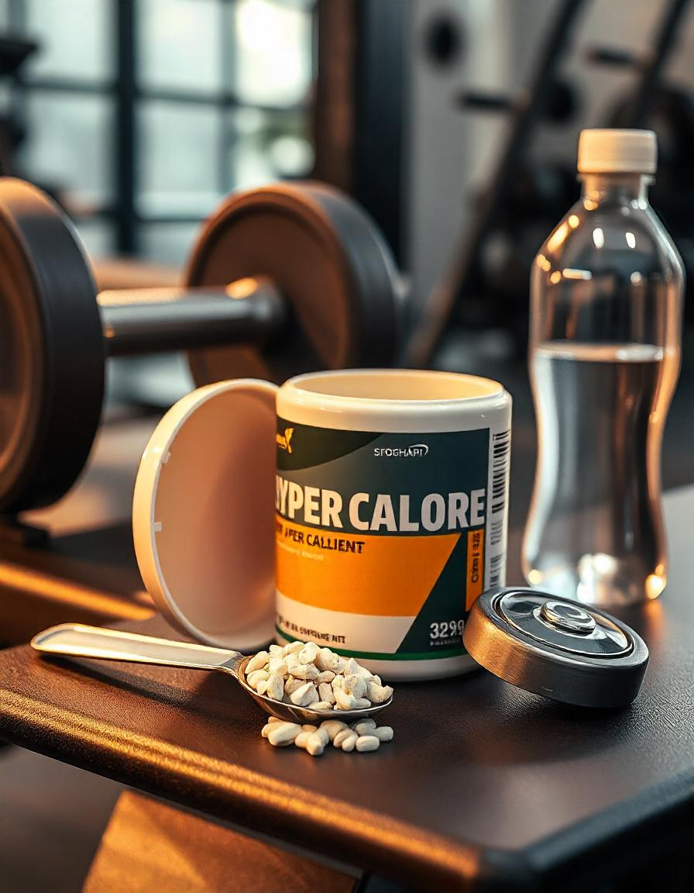

Os hipercalóricos são suplementos alimentares com alto valor calórico, especialmente formulados para
ajudar pessoas que buscam ganhar peso e massa muscular. Eles são ricos em carboidratos e proteínas,
essenciais para quem tem dificuldade em consumir calorias suficientes apenas por meio da alimentação.
Benefícios dos Hipercalóricos:
- Auxiliam no aumento de peso e ganho de massa muscular, oferecendo uma quantidade elevada de
calorias.
- Ricos em proteínas de fácil digestão e carboidratos de baixo índice glicêmico.
- Ideal para indivíduos com metabolismo acelerado ou com dificuldades em ganhar peso.
- Contribuem para uma recuperação mais rápida após o treino e aumentam a resistência durante
atividades físicas intensas.
- Ajudam a aumentar a ingestão calórica diária sem a necessidade de comer grandes quantidades de
alimentos.
Onde Encontrar o Hipercalórico
Os suplementos hipercalóricos podem ser encontrados em diversas lojas especializadas em nutrição e
suplementos alimentares, como:
- Loja X - Rua das Suplementos, 123
- Farmácia Y - Avenida da Saúde, 456
- Online: Sites como Mercado Livre, Amazon e lojas especializadas em nutrição esportiva.
Como Tomar o Hipercalórico
O consumo de hipercalóricos deve ser feito de acordo com as necessidades nutricionais de cada pessoa. A
recomendação geral inclui:
- 1 a 2 porções por dia, dependendo da necessidade calórica e do objetivo.
- O hipercalórico pode ser consumido entre as refeições ou após o treino, para ajudar na recuperação
muscular.
- É comum misturar o suplemento com água, leite ou até mesmo com outras frutas e alimentos para
melhorar o sabor e o valor nutricional.
Lembre-se de que o hipercalórico é um suplemento e deve ser usado como parte de uma dieta equilibrada.
Consulte um nutricionista ou médico antes de iniciar o uso.
Como é Produzido o Hipercalórico
O hipercalórico é produzido através de processos de misturas de ingredientes ricos em carboidratos e
proteínas. O processo de produção inclui as seguintes etapas:
- Seleção de fontes de carboidratos e proteínas, como maltodextrina, dextrose, whey protein e caseína.
- Combinação e processamento dos ingredientes, garantindo uma mistura homogênea e de fácil digestão.
- Secagem do produto e transformação em pó, para que o suplemento possa ser consumido com facilidade.
- Embalagem e distribuição para comercialização, com diferentes sabores e composições nutricionais.
Esse processo garante que o hipercalórico seja eficaz no fornecimento de calorias e nutrientes, atendendo
às necessidades de quem busca aumento de peso e massa muscular.